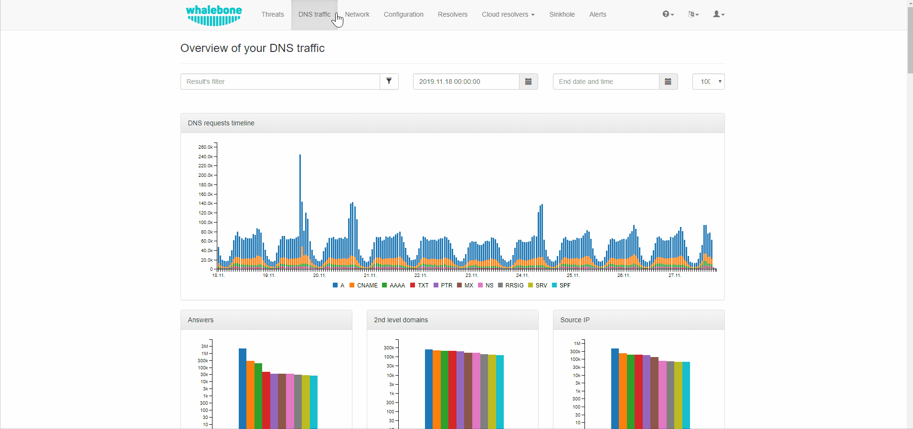

Reporting
Whalebone Portal provides the tools in order to configure various reporting options and manage the access to Whalebone API.
Reports
Reporting capabilities can be configured from the drop-down menu under a user’s account. The properties that can be customized, include the frequency that the reports are being delivered, the preferred day of the week, the language and the recipients.
Note
The default recipient is the owner of the account and the reports are delivered to their respective registered email address.
Alerts
Whalebone alerting provides live updates about key information such as resolver’s health, resolution status, hardware usage and it also informs about crucial security incidents and many more. All of these information can be passed through multiple channels e.g. email, slack, syslog or webhook. You can create new alert from predefined template and alerts can be then customized by threshold, time and many others.
You can watch step-by-step video guide below:
API
Whalebone API is a practical way to access all the data that are gathered by Whalebone’s resolvers and integrate them to external systems. The API documentation can be accessed at https://apidocs.whalebone.io/public/
In order to authenticate to the API, every user needs a set of Access Key and Secret Key. These can be managed from the option API keys on the dropdown menu, under the user’s account.
You can watch step-by-step video guide below:
API Key Generation
The generation of the API key can be achieved by clicking the Generate new key button.
Note
Make sure to copy the Key secret as it cannot be retrieved again.
API Key Revocation
In case an API key gets lost or compromised, its revocation can be achieved by the same menu.